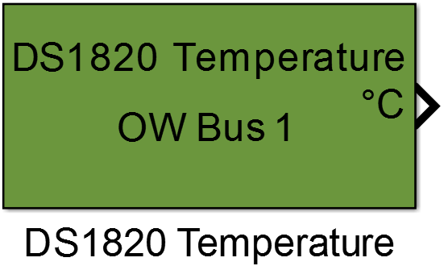
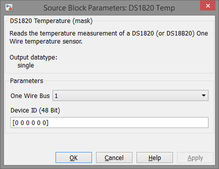

9.11. DS1820 Temperature
Reads the temperature measurement of a DS1820 (or DS18B20) One Wire temperature sensor.
9.11.1. Library
/OneWire/Sensors
9.11.2. Description
{kind=link}
The block addresses a One Wire temperature sensor of type DS1820, DS18S20 or DS18B20 and returns its temperature measurement in [°C]. When using a DS18B20 sensor the variable resolution is fixed to 12 bit. Temperature reading is performed in non-blocking mode.
9.11.3. Data Type Support
The block’s output value is of data type single.
9.11.4. Parameters and Dialog Box
9.11.4.1. One Wire Bus
Selects the One Wire bus which is configured by a One Wire Config block.
9.11.4.2. Device ID
This parameter contains the 48 bit unique device ID of the sensor to ensure each block addresses the same sensor even if devices are added or removed from the bus. If only one DS1820 type sensor is connected this parameter could be left empty.
Note
To examine the ID of a particular sensor the example project oneWireSearchRom_example could be used.